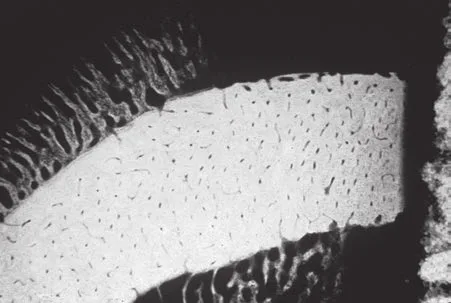
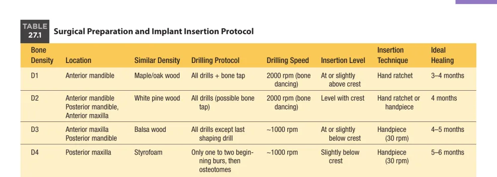

نسخه استخراجشده؛ ترجمه یا تأیید علمی انجام نشده است. وضعیت: captured
طبقهبندی تراکم Misch چهار گروه (D1 تا D4) دارد و برای هرکدام پروتکل جراحی جداگانهای پیشنهاد میشود. نواحی فک هم به چهار بخش تقسیم میشوند: ماگزیلای قدامی، ماگزیلای خلفی، مندیبل قدامی، و مندیبل خلفی.
D1 — کورتیکال متراکم (به سختی چوب بلوط یا افرا). تقریباً تماماً از استخوان کورتیکال متراکم ساخته شده.
تماس استخوان-ایمپلنت (BIC) در D1 بالاترین است: معمولاً بیش از ۸۰ درصد پس از ترمیم اولیه.
ولی D1 مشکلات خودش را دارد. یکم: قطعات استخوان به شیارهای فرز میچسبند و باید مکرراً با شستوشو برداشته شوند — هم برای حفظ کارایی برش و هم چون همین خردهها حرارت اصطکاکی تولید میکنند. دوم: در D1 باید تپ استخوانی پیش از کاشت ایمپلنت رزوهای استفاده شود، تا جزء ضدچرخشی بدنهی ایمپلنت هنگام ورود به این استخوان سخت آسیب نبیند. سوم: متهی کرستال هم در D1 به کار میرود.
و یک مزیت جانبی: با تراکم D1 بهندرت آندرکات فاسیال یا لینگوال دیده میشود، پس رفلکشن فلپ را میتوان در حداقل نگه داشت.
D2 — استخوان ایدهآل. این همان «نوع ایدهآل استخوان» است: ترمیم رابط ایمپلنت عالی و استئواینتگریشن بسیار پیشبینیپذیر.
اعداد D2: BIC حدود ۷۰ درصد پس از ترمیم اولیه، و ترمیم کافی در ۴ ماه — بهلطف خونرسانی عالی و تثبیت اولیهی محکم. آمادهسازی استئوتومی در D2 با دور بالاتر (مثلاً ۲۰۰۰ دور) پیش میرود و متهی کرستال برای بیشتر طرحها به کار میرود.

D3 — کورتیکال نازک متخلخل و ترابکولار ظریف.
عدد کلیدی D3: ترابکولار آن ۴۷ تا ۶۸ درصد ضعیفتر از D2 است — و در همان حال ۲۰ درصد قویتر از D4. یعنی D3 یک نقطهی میانی واقعی است، نه یک برچسب.
و از همین ضعف، یک قاعدهی قاطع بیرون میآید: تپ استخوانی هرگز در D3 اندیکاسیون ندارد. دلیلش دقیقاً همان است: ترابکولار ظریف ۵۰ درصد ضعیفتر از D2 است، و وقتی ایمپلنت به داخل رزوه میشود، خودش استخوان را فشرده میکند — یعنی خودِ ایمپلنت کار تپ را انجام میدهد و بهتر است بکند.
مزیت عملی D3: آمادهسازی استئوتومی برای هر اندازه مته کمتر از ۱۰ ثانیه طول میکشد. و چون معمولاً نه متهی کرست مدول و نه تپ به کار نمیرود، تعداد مراحل و زمان آمادهسازی کمتر است.
در سمت بیولوژیک، D3 حدود ۵۰ درصد استخوان در رابط اولیه پس از ترمیم دارد و از سطح زبر بدنهی ایمپلنت پیچی برای افزایش تثبیت اولیه و تماس استخوانی بهره میبرد.
D3 و زمان ترمیم. در D3 ترمیم بدون تروما حدود ۵ ماه طول میکشد، یعنی یک ماه بیشتر از D2، تا درصد بیشتری از ترابکولهای استخوانی اطراف ایمپلنت شکل بگیرند و مینرالیزه شوند. D4 از هر تراکم دیگری زمان بیشتری میخواهد: حدود ۵ تا ۶ ماه یا بیشتر.
استئودنسیفیکیشن (OD). رویکردی که استخوان را حفظ میکند و در همان حال تراکمش را بالا میبرد — و چون چنین میکند، زمان ترمیم ممکن است کوتاهتر شود. روش دیگر رسیدن به همین هدف، کوچکتر گرفتن قطر متهها از قطر ایمپلنت است.
و همهی اینها کنار هم. برای هر تراکم یک پروتکل کامل تعریف شده — و توجه کن که چهار پارامتر همزمان با تراکم عوض میشوند:
D1 (مندیبل قدامی، سختی چوب بلوط یا افرا): تمام متهها بهعلاوهی تپ، ۲۰۰۰ دور با رقص استخوان، سطح کاشت همسطح یا کمی بالاتر از کرست، درج با راچت دستی، ترمیم ۳ تا ۴ ماه.
D2 (مندیبل قدامی و خلفی، ماگزیلای قدامی، چوب کاج سفید): تمام متهها با احتمال تپ، ۲۰۰۰ دور، سطح کاشت همسطح کرست، راچت دستی یا هندپیس، ترمیم ۴ ماه.
D3 (ماگزیلای قدامی و خلفی، مندیبل خلفی، چوب بالسا): تمام متهها بهجز آخرین متهی شکلدهنده، حدود ۱۰۰۰ دور، سطح کاشت همسطح یا کمی پایینتر از کرست، هندپیس با ۳۰ دور، ترمیم ۴ تا ۵ ماه.
D4 (ماگزیلای خلفی، یونولیت): فقط یک تا دو متهی ابتدایی، سپس استئوتوم، حدود ۱۰۰۰ دور، سطح کاشت کمی پایینتر از کرست، هندپیس با ۳۰ دور، ترمیم ۵ تا ۶ ماه.
دو الگو را در این پروتکلها ببین. یکم: هرچه استخوان نرمتر، کمتر برمیداری — از «تمام متهها بهعلاوهی تپ» در D1 تا «یک تا دو مته و بعد استئوتوم» در D4. دوم: هرچه نرمتر، عمیقتر مینشینی — از بالای کرست در D1 تا زیر کرست در D4، چون استخوان کرستال نرم پشتیبانی کمتری میدهد.
و یک عدد دلگرمکننده: در مطالعهی چندمرکزی روی ۳۶۴ ایمپلنت در ۱۰۴ بیمار، بقای جراحی تا مرحلهی اتصال اباتمنت چنین بود: D1: ۱۰۰٪، D2: ۹۸٫۴٪، D3: ۹۹٫۸٪، D4: ۱۰۰٪. یعنی وقتی پروتکل با تراکم تطبیق داده شود، حتی D4 هم نتیجهی عالی میدهد. مشکل، خودِ استخوان ضعیف نیست — پروتکل نامتناسب است.
